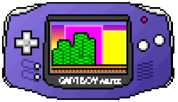

c.sarmientobaca@gmail.com

About me: Amante della tecnologia, anime/manga e gaming.
Hobby: Il mio tempo libero lo uso per giocare mobas o giochi di strategia sul pc, o guardare qualche serie tv.
Descrizione: Sono Carlos, sono di origine peruviana. Ho 30 anni, sono un appassionato della tecnologia, i videogame e gli anime.
Sono in Italia da più di 10 anni, sono un perito informatico e ho lavorato nel settore catering da un paggio di anni.
Le mie Competenze:
- Lavoro di gruppo
- Pensiero critico
- Lavoro sotto pressione
Competenze da acquisire:
- Organizzazione
- Ci metto troppo tempo risolvendo i problemi piu semplici
- Devo comtrolare bene il mio tempo